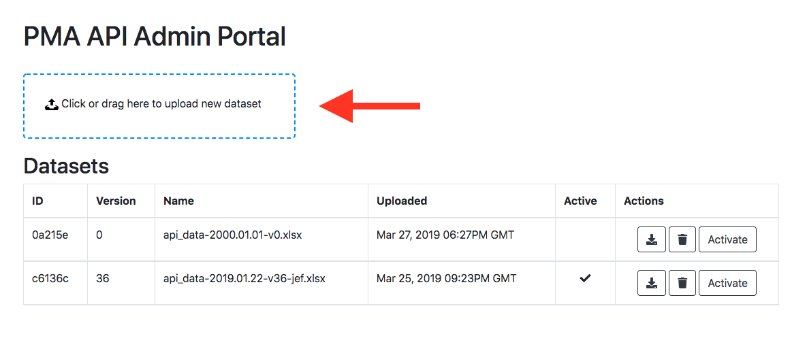
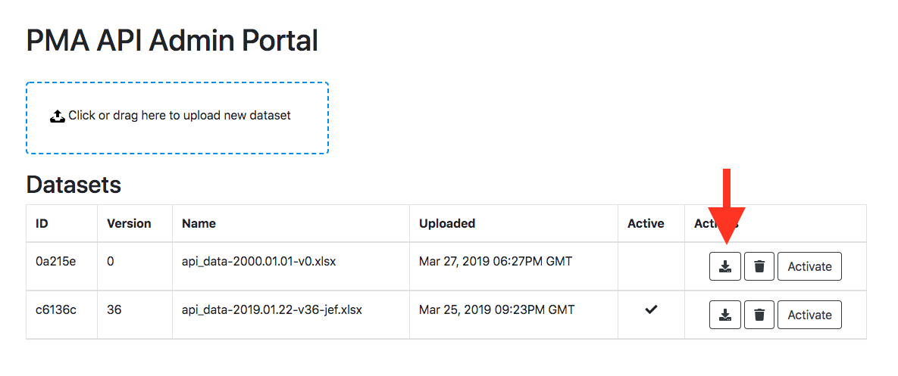
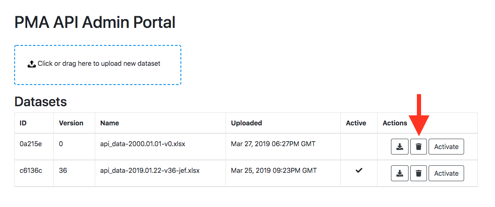
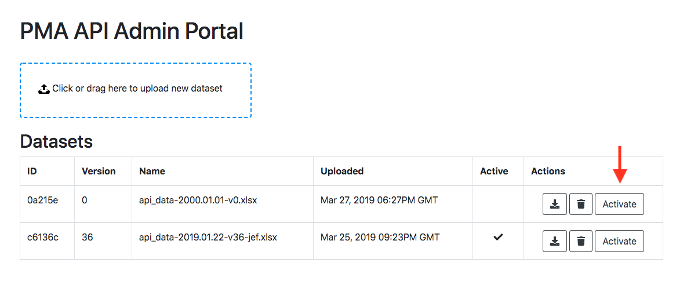
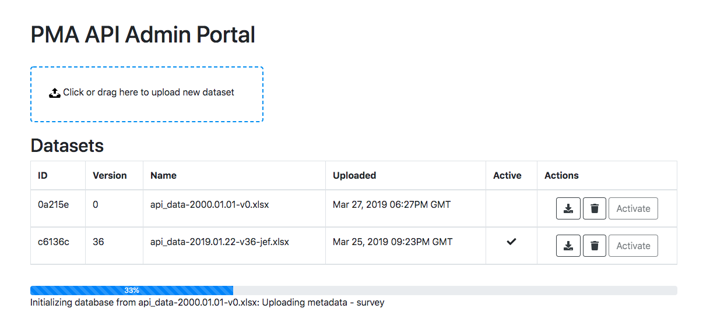
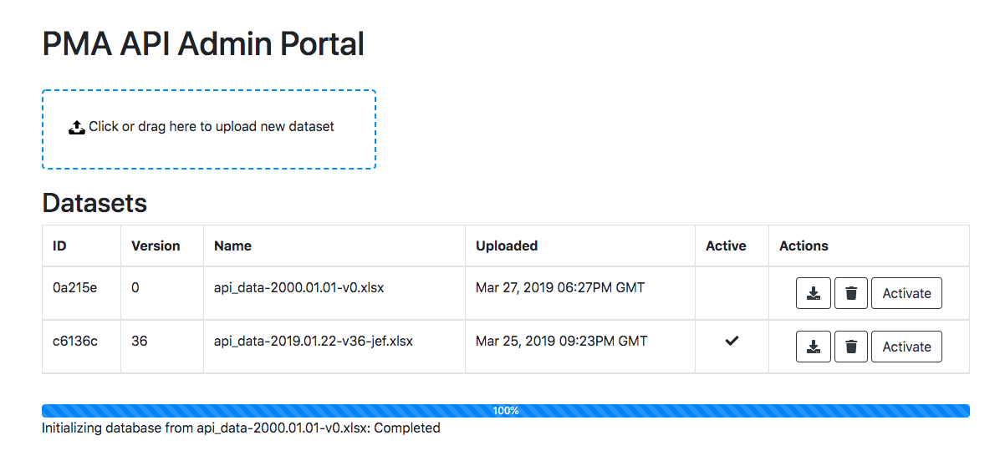
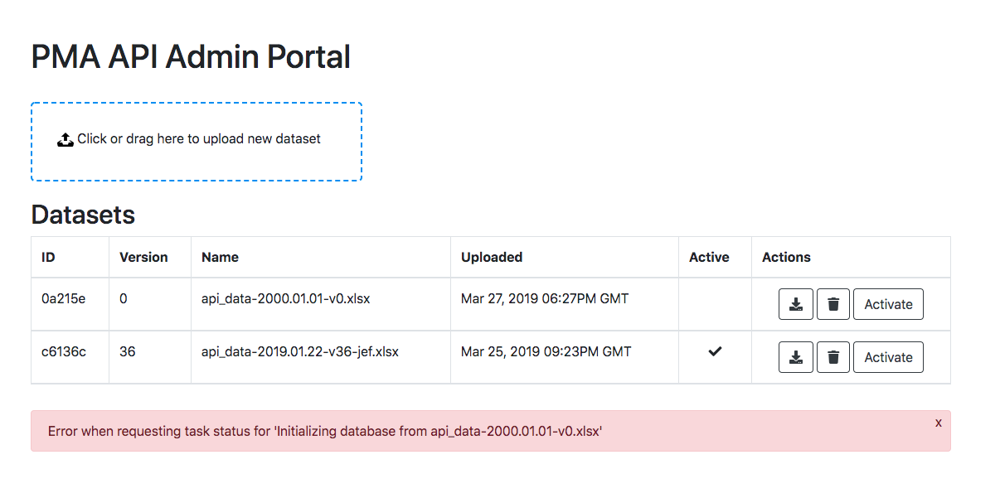
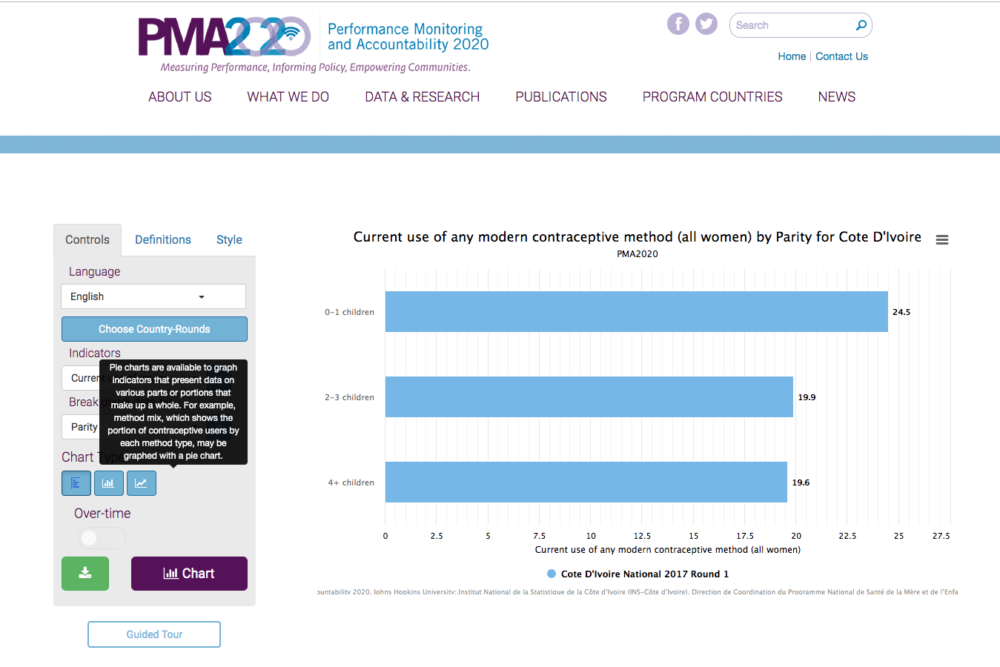

For data managers¶
PMA API dataset files¶
What are dataset files for?
PMA API dataset files contain all of the contents needed to construct PMA API’s
database.
File format
The file format should be an Excel workbook with the .xlsx file extension.
File naming
The name of the file must be named in very specific way as follows.
api_data-YYYY.MM.DD-v#-xxx
The file name is a hyphen delimited list of values, starting with the dataset type (always ‘api_data’), followed by the date in year, month, day format, followed by the version number (e.g. v1, v12, v100, etc), followed by initials (number of characters in initials does not matter). For example,
api_data-2019.04.22-v1-jef
Worksheets
The worksheets inside the file need to have very specific naming.
There is a single worksheet for each kind of structural metadata, where the
name of the worksheet is the singular noun for that metadata, e.g. country,
geography, etc. There is also a single worksheet called translation, which
contains all language translations. There can be any number of data
worksheets which can be named in any way, so long as the worksheet name starts
with the word ‘data’. It is also possible to create auxiliary worksheets that
will be ignored by PMA API. To create such a worksheet, simply put a double
underscore __ at the start of the worksheet name. Columns inside of the
worksheets must also have very specific naming. Similar to worksheets, you
can also create auxiliary columns that will be ignored by the PMA API by
starting the column name with a double underscore.
Online admin area¶
PMA API offers a few simple features for data management. Namely, you can upload, download, delete, and ‘activate’ datasets.
What is ‘activation’, and how is it different than uploading?
When a dataset is uploaded, it is essentially backed up to an online storage
area. The online storage area is shared between the staging and production
servers. When you upload or delete a dataset, you will notice this change
reflected in the list of available datasets shown whether you are logged into
the staging server or the production server. Since uploading is simply storing
the dataset file online, nothing else happens once it is uploaded; the PMA API
database has not changed yet. In order to update the database with any changes
in the dataset file, we have to ‘activate’. Activation takes that file, reads
it, and imports its contents into the database.
Currently, only one dataset can be ‘active’ at a given time.
Logging in¶
You can log in by accessing the /admin page. The credentials are pre-created
and are the same on any server, so it is not necessary/possible to register
for a new account. If the credentials have not been provided to you by the time
you read this, please check your credentials sharing service (e.g. LastPass),
or contact the person in charge of PMA API server administration.
Admin area URLs
Staging server: http://api-staging.pma2020.org/admin
Production server: http://api.pma2020.org/admin
Uploading datasets¶
As mentioned previously, uploading a dataset places the dataset in an online storage area that is shared between the staging and production servers. Uploading does not cause the contents of the dataset file to be reflected in the PMA API database. For information on doing that, please refer to the ‘activating datasets’ section.

Downloading datasets¶

Deleting datasets¶

Activating datasets¶
1. Activate and test on staging server¶
1.1. Make sure the dataset is uploaded¶
If the dataset you want to activate appears as a row in the datasets table, proceed to the next step. Otherwise, upload the dataset file first.
1.2. Click the ‘activate’ button¶

1.3. Wait until request resolution¶
A progress bar will display estimated progress percentage as well as a status message of the task that the server is currently executing. Some steps may hang for before you see any updates, even for several minutes. Do not worry about the possibility of a complete frozen state unless you see that the progress has not updated at all in about 20 minutes or so. If that happens, contact the PMA API server administrator.
Progress updates

Success!

1.4. Troubleshoot issues¶
If any issues occur during the activation process, a notification bar will appear. Typically, these messages will include helpful information, such as information about parts of the dataset file that may contain issues that need to be corrected.

1.5. Verify / test on Datalab¶
After the progress bar reaches 100%, the dataset will have been activated. While Datalab does run some automated validation and testing, it is essential to do some manual testing and verification. For example, a good method of testing would be to open up an application that connects to the API, e.g. Datalab, and try to create some charts. If some metadata was added, deleted, or otherwise changed in the latest dataset activated, do you see those changes correctly reflected in Datalab? Are you able to successfully make a chart that utilizes some new data that has been added? Do the numbers or appearance of the graph reflect what you might expect?
Datalab URLs
Staging server: http://datalab-staging.pma2020.org
Production server: http://datalab.pma2020.org

2. Activate and test on production server¶
After the dataset has been activated and tested on the staging server, repeat this same process for the production server.